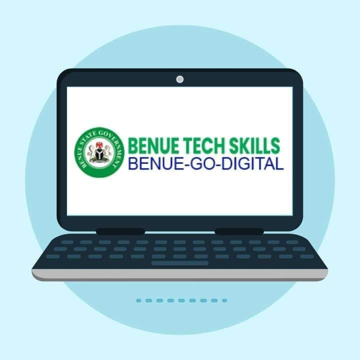

styls Benue ICT Ecosystem” initiative is designed to empower Benue State youths with the necessary skills and knowledge to excel and dominate in digital economy and foster economic growth and innovation within the state.
Benue Tech Skills is significantly enhancing my digital skills through its comprehensive and structured learning programs.
Hands-on projects and practical assignments simulate real-world scenarios, allowing me to build a strong portfolio and gain practical experience.
The supportive community and networking opportunities foster collaboration and continuous learning, while up-to-date resources ensure I stay current with the latest industry trends.Benue Tech Skills is providing me with the knowledge, practical experience, and support needed to excel in the digital world.
 My Profile
My Profile